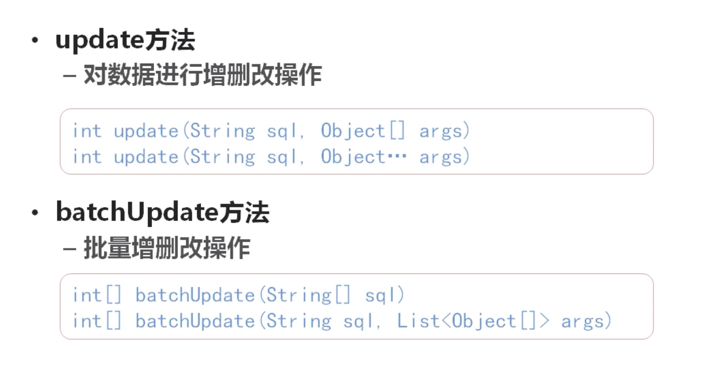
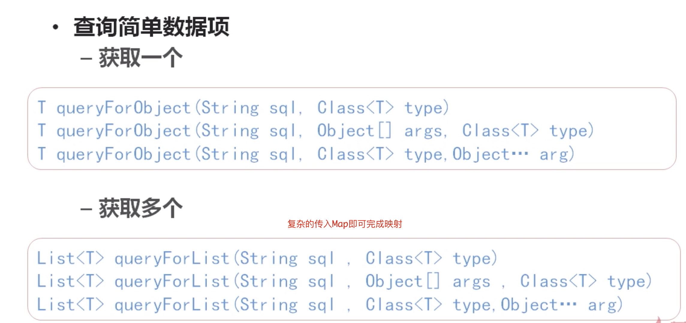
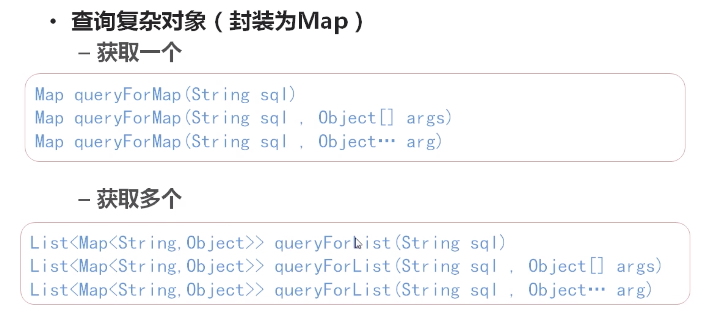
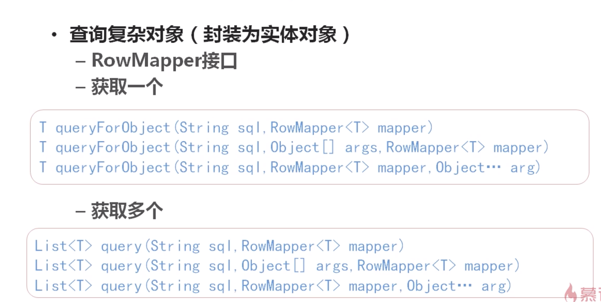
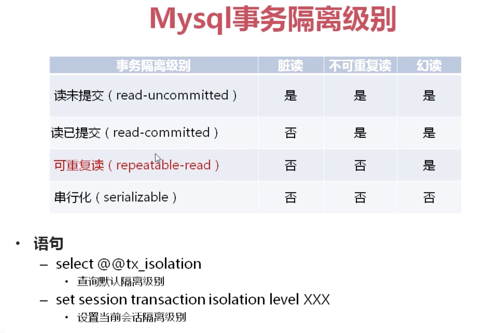
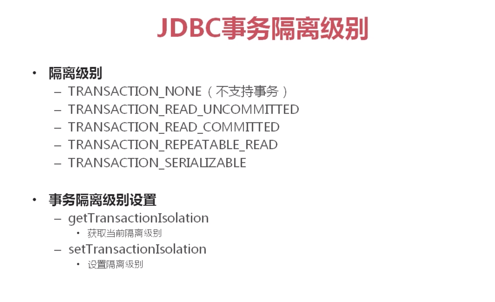
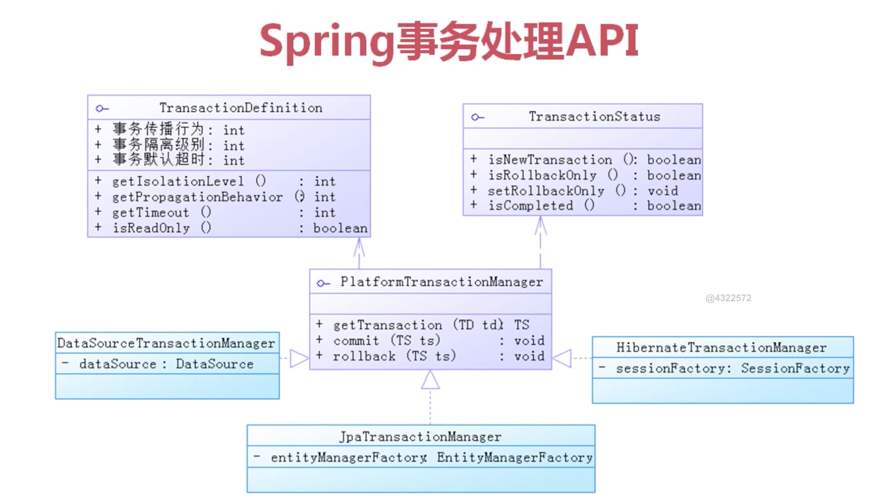
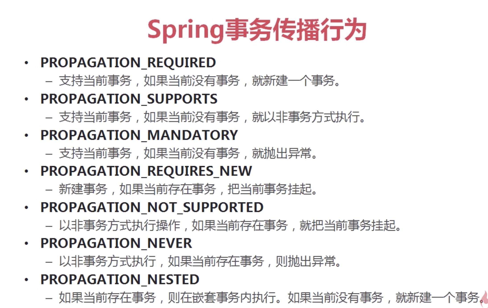

学习来源：SSM主流框架入门与综合项目实战
贴一些术语定义之类的，主要的还是代码，就不贴了
AOP术语
JoinPoint被拦截到的点，Spring中这些点指的是方法PointCut对哪些JoinPoint进行拦截的定义Advice拦截到JoinPoint之后所要做的事情Introduction在不修改类的代码的前提下在运行期间动态添加一些 Method 或 FieldTarget代理的目标对象Weaving创建代理对象的过程Proxy产生的代理类AspectJoinPoint 和 Introduction 的结合
使用aspectj
@Before前置通知 BeforeAdvice 权限验证@AfterReturning后置通知 AfterReturningAdvice 日志记录@Around环绕通知 MethodInterceptor@AfterThrowing异常抛出通知 ThrowAdvice@After最终通知 final 不管是否异常都会执行
使用execution函数
execution(<访问修饰符>?<返回类型><方法名>(<参数>)<异常>)
- 所有public方法
execution(public * * (..))
- 指定包下的方法
execution(* com.example.dao.*(..))不包含子包execution(* com.example.dao..*(..))包含子包
- 指定包所有方法
execution(* com.example.dao.AAA.*(..))
- 实现特定接口
execution(* com.example.dao.AAA+.*(..))
- 所有以save开头的方法
execution(* save*(..))
使用jdbc template
对原始 JDBC 的简单封装
相关配置
1 | <bean id="datasource" class="org.springframework.jdbc.datasource.DriverManagerDataSource"> |




数据库事务相关术语
事务要么完全执行，要么完全不执行原子性不可分割 结构上一致性必须使从一个一致性状态变为另一个一致性状态 业务规则上隔离性一个事务的执行不能被另一个所干扰持久性脏读：读取未commit的数据不可重复读读两次，结果不一样 在这个事务中有别的事务插入幻读置零，另一个事务介入置10，再次读不为0Mysql事务隔离级别

- JDBC事务隔离级别

- Spring事务处理api

- Spring事务传播行为
